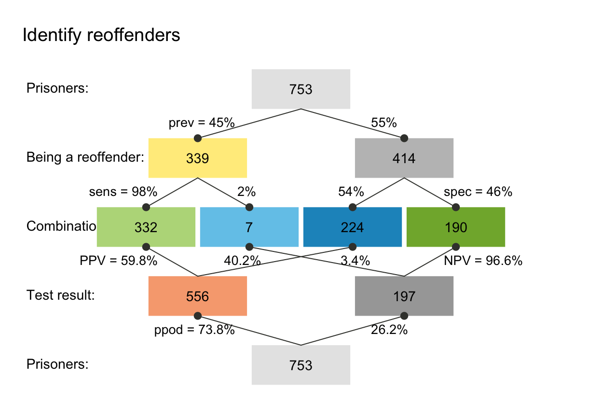

riskyr creates a scenario of class "riskyr",
which can be visualized by the plot method plot.riskyr
and summarized by the summary method summary.riskyr.
Usage
riskyr(
scen_lbl = txt$scen_lbl,
popu_lbl = txt$popu_lbl,
N_lbl = txt$N_lbl,
cond_lbl = txt$cond_lbl,
cond_true_lbl = txt$cond_true_lbl,
cond_false_lbl = txt$cond_false_lbl,
dec_lbl = txt$dec_lbl,
dec_pos_lbl = txt$dec_pos_lbl,
dec_neg_lbl = txt$dec_neg_lbl,
acc_lbl = txt$acc_lbl,
dec_cor_lbl = txt$dec_cor_lbl,
dec_err_lbl = txt$dec_err_lbl,
sdt_lbl = txt$sdt_lbl,
hi_lbl = txt$hi_lbl,
mi_lbl = txt$mi_lbl,
fa_lbl = txt$fa_lbl,
cr_lbl = txt$cr_lbl,
prev = NA,
sens = NA,
spec = NA,
fart = NA,
N = NA,
hi = NA,
mi = NA,
fa = NA,
cr = NA,
scen_lng = txt$scen_lng,
scen_txt = txt$scen_txt,
scen_src = txt$scen_src,
scen_apa = txt$scen_apa,
round = TRUE,
sample = FALSE
)Arguments
- scen_lbl
The current scenario title (sometimes in Title Caps).
- popu_lbl
A brief description of the current population or sample.
- N_lbl
A label for the current population
popuor sample.- cond_lbl
A label for the condition or feature (e.g., some disease) currently considered.
- cond_true_lbl
A label for the presence of the current condition or
cond_truecases (the condition's true state of TRUE).- cond_false_lbl
A label for the absence of the current condition or
cond_falsecases (the condition's true state of FALSE).- dec_lbl
A label for the decision or judgment (e.g., some diagnostic test) currently made.
- dec_pos_lbl
A label for positive decisions or
dec_poscases (e.g., predicting the presence of the condition).- dec_neg_lbl
A label for negative decisions or
dec_negcases (e.g., predicting the absence of the condition).- acc_lbl
A label for accuracy (i.e., correspondence between condition and decision or judgment).
- dec_cor_lbl
A label for correct (or accurate) decisions or judgments.
- dec_err_lbl
A label for incorrect (or erroneous) decisions or judgments.
- sdt_lbl
A label for the combination of condition and decision currently made.
- hi_lbl
A label for hits or true positives
hi(i.e., correct decisions of the presence of the condition, when the condition is actually present).- mi_lbl
A label for misses or false negatives
mi(i.e., incorrect decisions of the absence of the condition when the condition is actually present).- fa_lbl
A label for false alarms or false positives
fa(i.e., incorrect decisions of the presence of the condition when the condition is actually absent).- cr_lbl
A label for correct rejections or true negatives
cr(i.e., a correct decision of the absence of the condition, when the condition is actually absent).Essential probabilities:
- prev
The condition's prevalence
prev(i.e., the probability of condition beingTRUE).- sens
The decision's sensitivity
sens(i.e., the conditional probability of a positive decision provided that the condition isTRUE).sensis optional when its complementmirtis provided.- spec
The decision's specificity value
spec(i.e., the conditional probability of a negative decision provided that the condition isFALSE).specis optional when its complementfartis provided.- fart
The decision's false alarm rate
fart(i.e., the conditional probability of a positive decision provided that the condition isFALSE).fartis optional when its complementspecis provided.Essential frequencies:
- N
The number of individuals in the scenario's population. A suitable value of
Nis computed, if not provided.- hi
The number of hits
hi(or true positives).- mi
The number of misses
mi(or false negatives).- fa
The number of false alarms
fa(or false positives).- cr
The number of correct rejections
cr(or true negatives).Details and source information:
- scen_lng
Language of the current scenario (as character code). Options:
"en"for English,"de"for German.- scen_txt
A longer text description of the current scenario (which may extend over several lines).
- scen_src
Source information for the current scenario.
- scen_apa
Source information for the current scenario according to the American Psychological Association (APA style).
- round
Boolean value that determines whether frequency values are rounded to the nearest integer. Default:
round = TRUE.Note: Only rounding when using
comp_freq_prob(i.e., computingfreqfromprobdescription).- sample
Boolean value that determines whether frequency values are sampled from
N, given the probability values ofprev,sens, andspec. Default:sample = FALSE.Note: Only sampling when using
comp_freq_prob(i.e., computingfreqfromprobdescription).
Value
A riskyr object describing a risk-related scenario.
Scenario-specific titles and text labels (see txt).
Details
Beyond basic scenario information (i.e., text elements describing a scenario)
only the population size N and the essential probabilities
prev, sens, spec, and fart
are used and returned.
Note:
Basic text information and some numeric parameters (see
numandinit_num) are integral parts of ariskyrscenario.By contrast, basic color information (see
palandinit_pal) is not an integral part, but independently defined.The names of probabilities (see
prob) are currently not an integral part oftxtandriskyrscenarios (but defined inprob_lbl_defandlabel_prob).
Examples
# Defining scenarios: -----
# (a) minimal information:
hustosis <- riskyr(scen_lbl = "Screening for hustosis",
N = 1000, prev = .04, sens = .80, spec = .95)
# (2) detailed information:
scen_reoffend <- riskyr(scen_lbl = "Identify reoffenders",
cond_lbl = "being a reoffender",
popu_lbl = "Prisoners",
cond_true_lbl = "has reoffended",
cond_false_lbl = "has not reoffended",
dec_lbl = "test result",
dec_pos_lbl = "will reoffend",
dec_neg_lbl = "will not reoffend",
sdt_lbl = "combination",
hi_lbl = "reoffender found", mi_lbl = "reoffender missed",
fa_lbl = "false accusation", cr_lbl = "correct release",
prev = .45, # prevalence of being a reoffender.
sens = .98,
spec = .46, fart = NA, # (provide 1 of 2)
N = 753,
scen_src = "Example scenario")
# Using scenarios: -----
summary(hustosis)
#> Scenario: Screening for hustosis
#>
#> Condition: True condition
#> Decision: Outcome
#> Population: Population
#> N = 1000
#> Source: Source information
#>
#> Probabilities:
#>
#> Essential probabilities:
#> prev sens mirt spec fart
#> 0.04 0.80 0.20 0.95 0.05
#>
#> Other probabilities:
#> ppod PPV NPV FDR FOR acc
#> 0.080 0.400 0.991 0.600 0.009 0.944
#>
#> Frequencies:
#>
#> by conditions:
#> cond_true cond_false
#> 40 960
#>
#> by decision:
#> dec_pos dec_neg
#> 80 920
#>
#> by correspondence (of decision to condition):
#> dec_cor dec_err
#> 944 56
#>
#> 4 essential (SDT) frequencies:
#> hi mi fa cr
#> 32 8 48 912
#>
#> Accuracy:
#>
#> acc:
#> 0.944
plot(hustosis)
summary(scen_reoffend)
#> Scenario: Identify reoffenders
#>
#> Condition: being a reoffender
#> Decision: test result
#> Population: Prisoners
#> N = 753
#> Source: Example scenario
#>
#> Probabilities:
#>
#> Essential probabilities:
#> prev sens mirt spec fart
#> 0.45 0.98 0.02 0.46 0.54
#>
#> Other probabilities:
#> ppod PPV NPV FDR FOR acc
#> 0.738 0.598 0.966 0.402 0.034 0.694
#>
#> Frequencies:
#>
#> by conditions:
#> cond_true cond_false
#> 339 414
#>
#> by decision:
#> dec_pos dec_neg
#> 556 197
#>
#> by correspondence (of decision to condition):
#> dec_cor dec_err
#> 522 231
#>
#> 4 essential (SDT) frequencies:
#> hi mi fa cr
#> 332 7 224 190
#>
#> Accuracy:
#>
#> acc:
#> 0.694
plot(scen_reoffend)

# 2 ways of defining the same scenario:
s1 <- riskyr(prev = .5, sens = .5, spec = .5, N = 100) # s1: define by 3 prob & N
s2 <- riskyr(hi = 25, mi = 25, fa = 25, cr = 25) # s2: same scenario by 4 freq
all.equal(s1, s2) # should be TRUE
#> [1] TRUE
# Rounding and sampling:
s3 <- riskyr(prev = 1/3, sens = 2/3, spec = 6/7, N = 100, round = FALSE) # s3: w/o rounding
s4 <- riskyr(prev = 1/3, sens = 2/3, spec = 6/7, N = 100, sample = TRUE) # s4: with sampling
# Note:
riskyr(prev = .5, sens = .5, spec = .5, hi = 25, mi = 25, fa = 25, cr = 25) # works (consistent)
#> $scen_lbl
#> [1] "Scenario"
#>
#> $popu_lbl
#> [1] "Population"
#>
#> $N_lbl
#> [1] "N"
#>
#> $cond_lbl
#> [1] "True condition"
#>
#> $cond_true_lbl
#> [1] "present"
#>
#> $cond_false_lbl
#> [1] "absent"
#>
#> $dec_lbl
#> [1] "Outcome"
#>
#> $dec_pos_lbl
#> [1] "positive"
#>
#> $dec_neg_lbl
#> [1] "negative"
#>
#> $acc_lbl
#> [1] "Accuracy"
#>
#> $dec_cor_lbl
#> [1] "correct"
#>
#> $dec_err_lbl
#> [1] "incorrect"
#>
#> $sdt_lbl
#> [1] "Cases"
#>
#> $hi_lbl
#> [1] "TP"
#>
#> $mi_lbl
#> [1] "FN"
#>
#> $fa_lbl
#> [1] "FP"
#>
#> $cr_lbl
#> [1] "TN"
#>
#> $prev
#> [1] 0.5
#>
#> $sens
#> [1] 0.5
#>
#> $spec
#> [1] 0.5
#>
#> $fart
#> [1] 0.5
#>
#> $N
#> [1] 100
#>
#> $hi
#> [1] 25
#>
#> $mi
#> [1] 25
#>
#> $fa
#> [1] 25
#>
#> $cr
#> [1] 25
#>
#> $scen_lng
#> [1] "en/de"
#>
#> $scen_txt
#> [1] "Description of the current scenario in a short paragraph of text. This description may include several sentences."
#>
#> $scen_src
#> [1] "Source information"
#>
#> $scen_apa
#> [1] "Source information in APA format"
#>
#> attr(,"class")
#> [1] "riskyr"
riskyr(prev = .5, sens = .5, spec = .5, hi = 25, mi = 25, fa = 25) # works (ignores freq)
#> $scen_lbl
#> [1] "Scenario"
#>
#> $popu_lbl
#> [1] "Population"
#>
#> $N_lbl
#> [1] "N"
#>
#> $cond_lbl
#> [1] "True condition"
#>
#> $cond_true_lbl
#> [1] "present"
#>
#> $cond_false_lbl
#> [1] "absent"
#>
#> $dec_lbl
#> [1] "Outcome"
#>
#> $dec_pos_lbl
#> [1] "positive"
#>
#> $dec_neg_lbl
#> [1] "negative"
#>
#> $acc_lbl
#> [1] "Accuracy"
#>
#> $dec_cor_lbl
#> [1] "correct"
#>
#> $dec_err_lbl
#> [1] "incorrect"
#>
#> $sdt_lbl
#> [1] "Cases"
#>
#> $hi_lbl
#> [1] "TP"
#>
#> $mi_lbl
#> [1] "FN"
#>
#> $fa_lbl
#> [1] "FP"
#>
#> $cr_lbl
#> [1] "TN"
#>
#> $prev
#> [1] 0.5
#>
#> $sens
#> [1] 0.5
#>
#> $spec
#> [1] 0.5
#>
#> $fart
#> [1] 0.5
#>
#> $N
#> [1] 10
#>
#> $hi
#> [1] 2
#>
#> $mi
#> [1] 3
#>
#> $fa
#> [1] 3
#>
#> $cr
#> [1] 2
#>
#> $scen_lng
#> [1] "en/de"
#>
#> $scen_txt
#> [1] "Description of the current scenario in a short paragraph of text. This description may include several sentences."
#>
#> $scen_src
#> [1] "Source information"
#>
#> $scen_apa
#> [1] "Source information in APA format"
#>
#> attr(,"class")
#> [1] "riskyr"
## Watch out for:
# riskyr(hi = 25, mi = 25, fa = 25, cr = 25, N = 101) # warns, uses actual sum of freq
# riskyr(prev = .4, sens = .5, spec = .5, hi = 25, mi = 25, fa = 25, cr = 25) # warns, uses freq